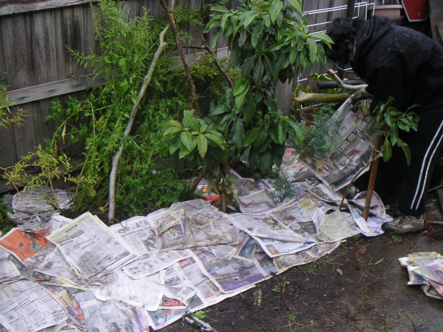

<--Previous
Up
Next-->

Sally getting a kitchen-close herb garden sheet mulched out - in accordance with the permaculture motto of "oftenest nearest" or planting the stuff you use most often closest to the kitchen